Learning Centre
Explore Space in More Detail
This page is designed for students who want to learn more about the universe, galaxies, the solar system, moons, space objects, and space exploration through detailed information, images, and videos.
01
Universe and Galaxies
The universe includes all space, time, matter, and energy. It contains billions of galaxies, and each galaxy can contain stars, planets, gas, dust, black holes, and dark matter.
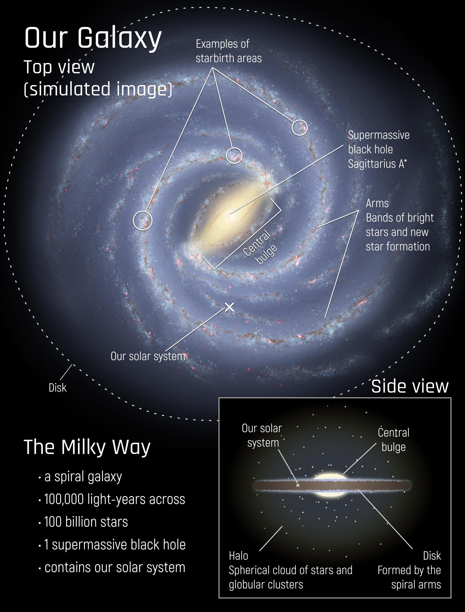
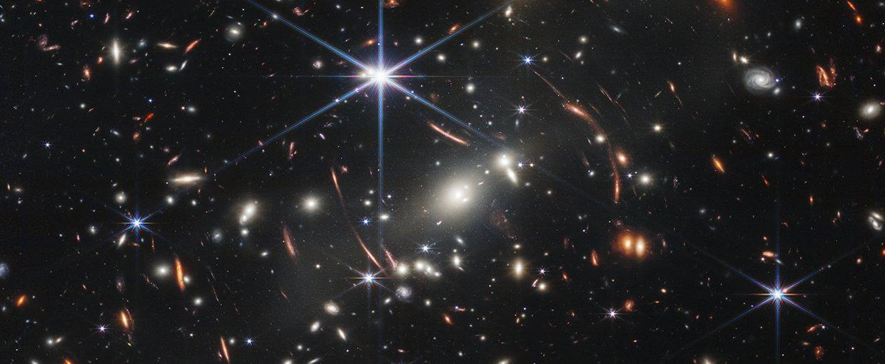
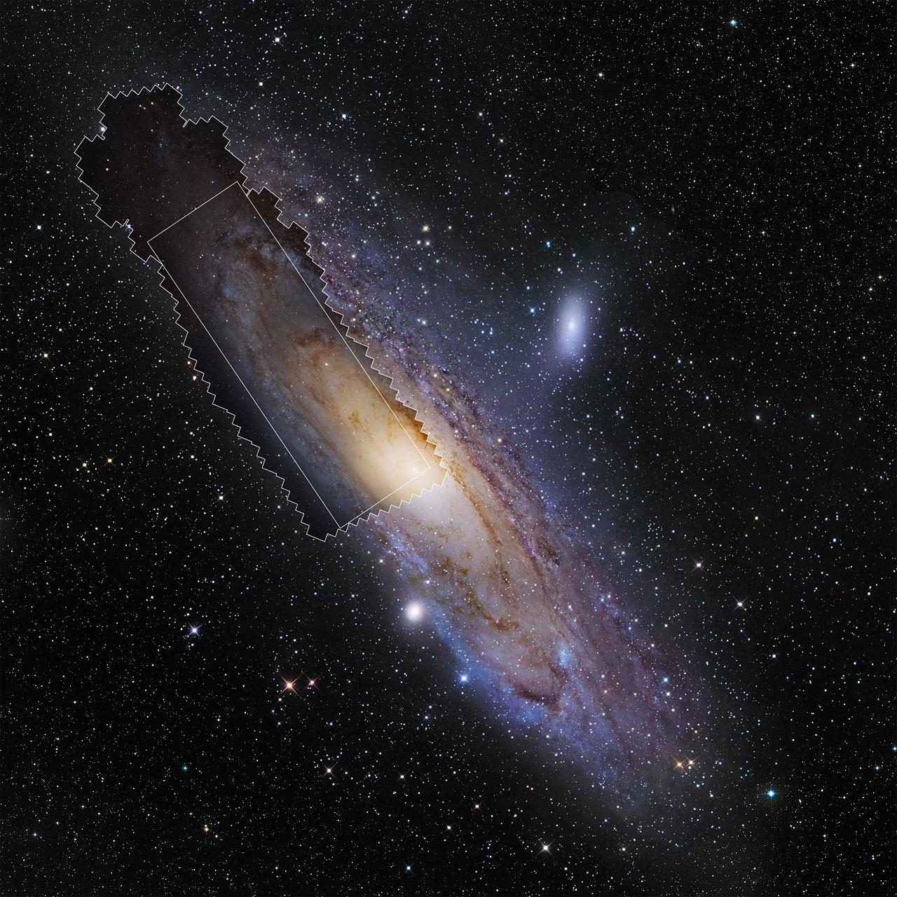
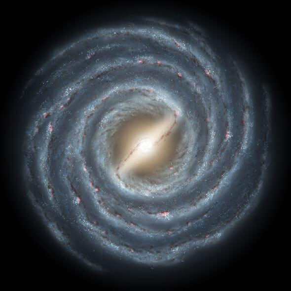
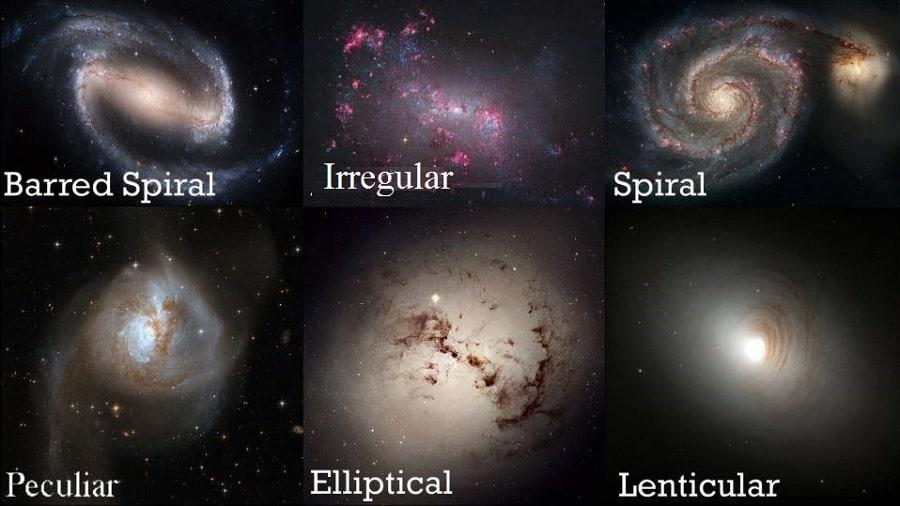
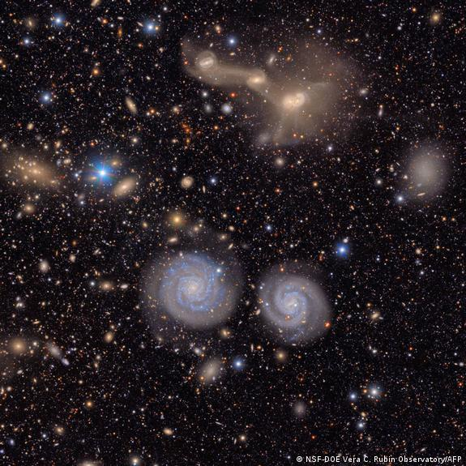
Understanding the Universe
The universe is everything that exists, including all space, time, matter, and energy. Scientists estimate that the universe began about 13.8 billion years ago with an event known as the Big Bang. Since then, the universe has continued to expand, meaning galaxies are moving away from each other as space stretches.
Our solar system is located inside the Milky Way galaxy. The Milky Way is only one of many galaxies in the universe, which shows how small Earth is compared with the wider scale of space.
Types of Galaxies
Galaxies come in different shapes and sizes. Spiral galaxies have rotating arms filled with stars, gas, and dust. The Milky Way is a barred spiral galaxy. Elliptical galaxies are round or oval and usually contain older stars with less gas and dust. Irregular galaxies have no clear shape and may form due to galaxy collisions or gravitational interactions.
Black Holes and Dark Matter
At the centre of many galaxies is a supermassive black hole. A black hole is an object with gravity so strong that even light cannot escape. The Milky Way has a supermassive black hole called Sagittarius A* at its centre.
Dark matter is another important part of the universe. It cannot be seen directly, but scientists know it exists because of the way its gravity affects galaxies. Dark matter helps explain why galaxies rotate and hold together the way they do.
02
Solar System Science
The solar system includes the Sun, eight planets, five officially named dwarf planets, moons, asteroids, comets, and other smaller objects.
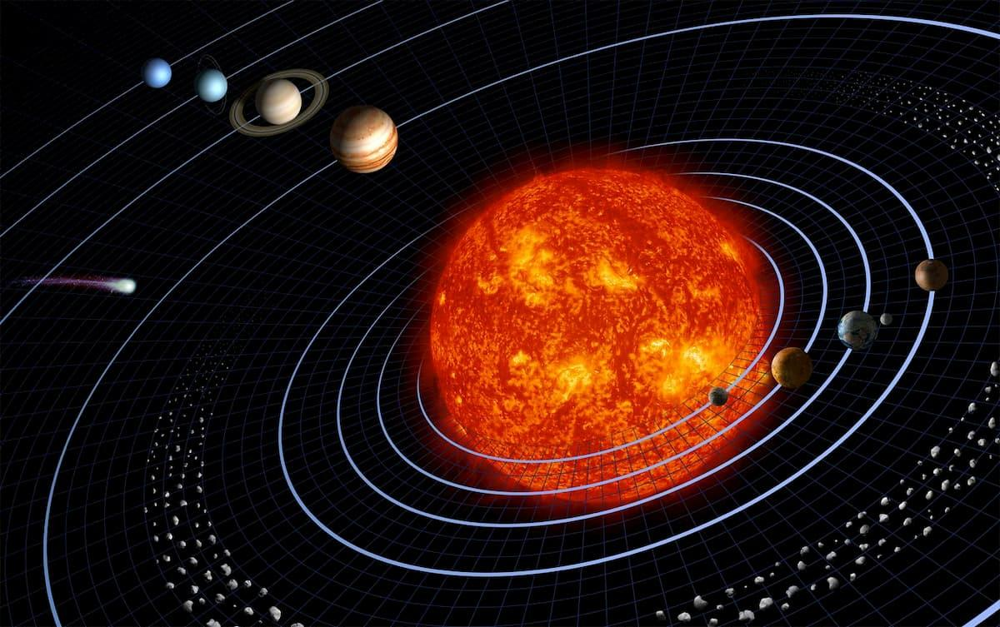
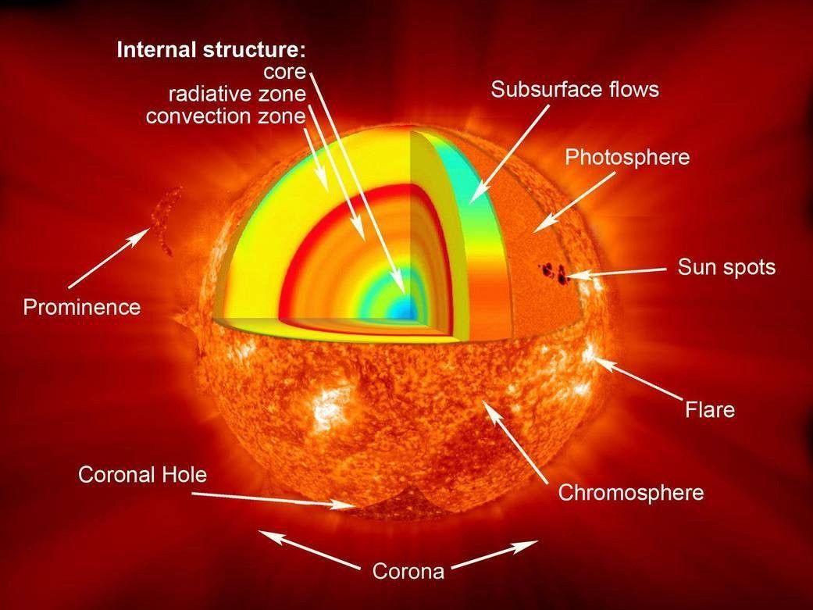

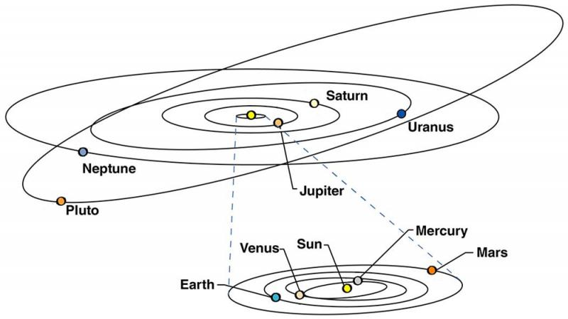
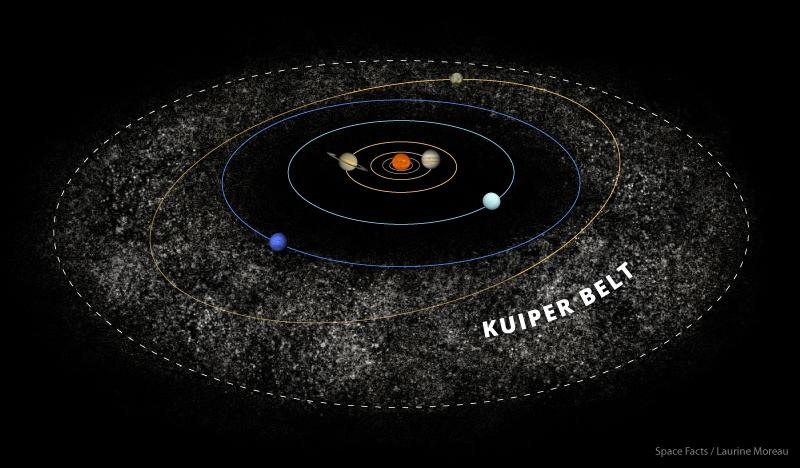
Formation of the Solar System
The solar system formed about 4.6 billion years ago from a giant cloud of gas and dust. Gravity pulled this material together and formed the Sun at the centre. The remaining material formed a rotating disk, where planets, moons, asteroids, and comets developed over time.
How Orbits Work
Planets move around the Sun in elliptical orbits because of gravity. The Sun’s gravity pulls planets inward, while the planets continue moving forward. This balance keeps them travelling around the Sun instead of flying away or falling into it.
Planets also rotate on their axes. This rotation causes day and night. The time it takes for a planet to rotate once is called its day, while the time it takes to orbit the Sun is called its year.
Inner and Outer Planets
The inner planets are Mercury, Venus, Earth, and Mars. They are smaller, rocky, and closer to the Sun. The outer planets are Jupiter, Saturn, Uranus, and Neptune. They are much larger and are made mostly of gas and ice.
Structure of the Sun
The Sun is a star made mostly of hydrogen and helium. It produces energy through nuclear fusion in its core. Its main layers include the core, radiative zone, convective zone, photosphere, and corona. The Sun provides the light and heat needed for life on Earth.
Small Bodies in the Solar System
The solar system also contains smaller objects such as asteroids and comets. The asteroid belt is located between Mars and Jupiter. The Kuiper Belt is beyond Neptune and contains icy objects, including dwarf planets such as Pluto.
03
Moons and Space Objects
Moons, asteroids, comets, and meteors are important parts of the solar system. They help scientists understand how planets and other objects formed.
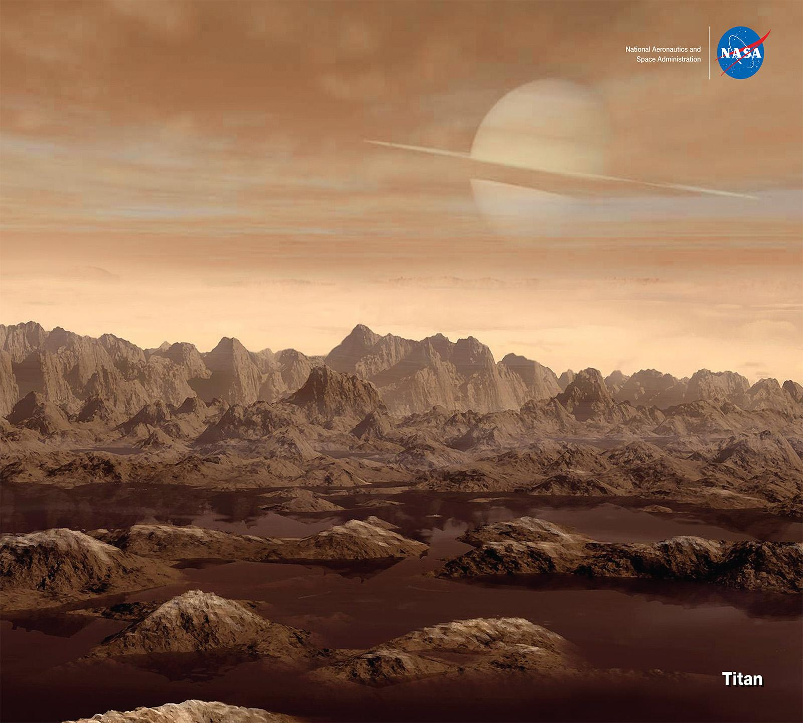
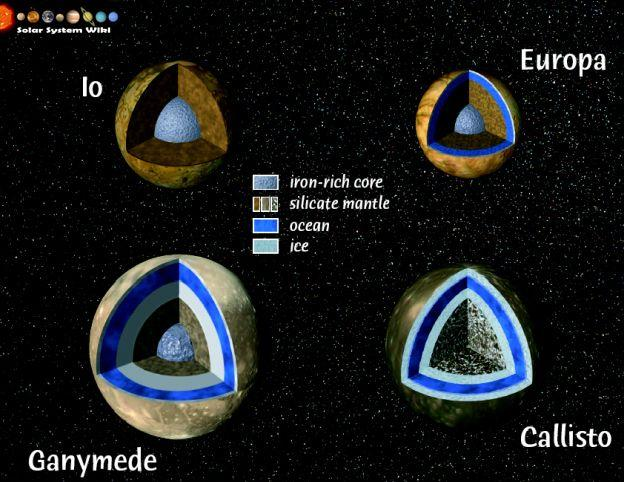
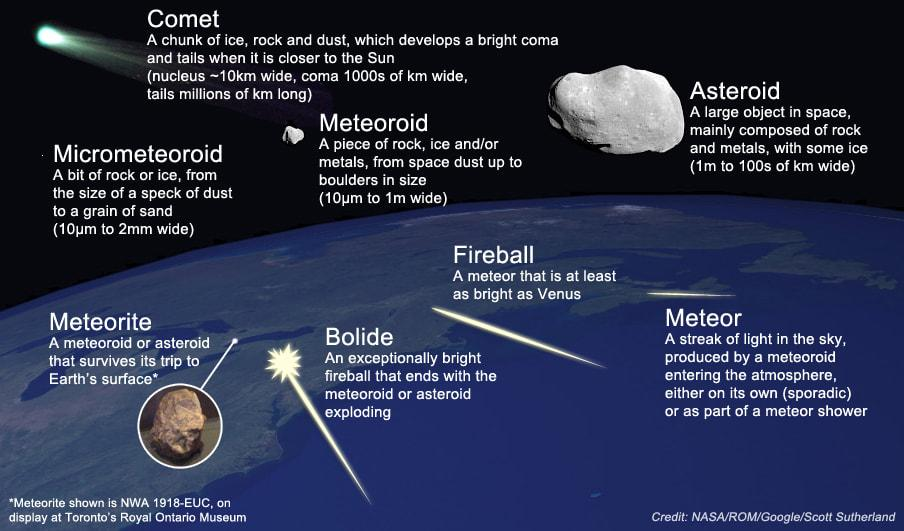

What Are Moons?
Moons are natural satellites that orbit planets or dwarf planets. Earth has one Moon, but planets like Jupiter and Saturn have many. Moons can be rocky, icy, volcanic, or covered in frozen surfaces.
Phases of the Moon
The Moon appears to change shape because of its position compared with Earth and the Sun. These changes are called phases. The main phases include new Moon, first quarter, full Moon, and last quarter.
Important Moons
Europa, one of Jupiter’s moons, may have an ocean beneath its icy surface. Titan, Saturn’s largest moon, has a thick atmosphere and lakes of liquid methane. Ganymede is the largest moon in the solar system and is even larger than the planet Mercury.
Asteroids, Comets, and Meteors
Asteroids are rocky objects, mostly found in the asteroid belt. Comets are icy bodies that develop glowing tails when they travel close to the Sun. Meteors are bright streaks of light seen when small space rocks enter Earth’s atmosphere and burn up.
These objects are leftovers from the early solar system, so studying them helps scientists learn more about how the solar system formed.
04
Space Exploration
Space exploration allows humans to study planets, moons, stars, galaxies, and the conditions beyond Earth.
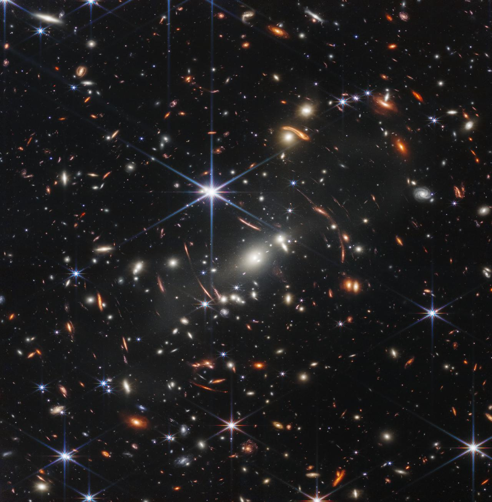
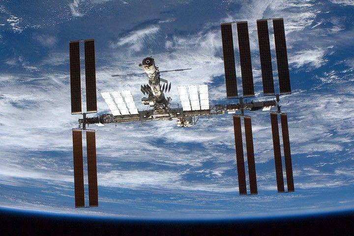
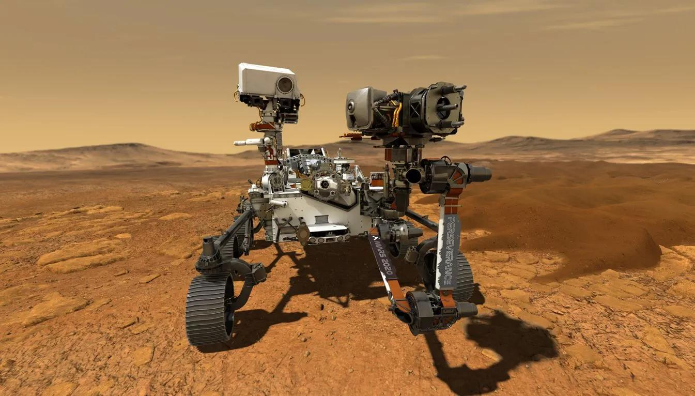
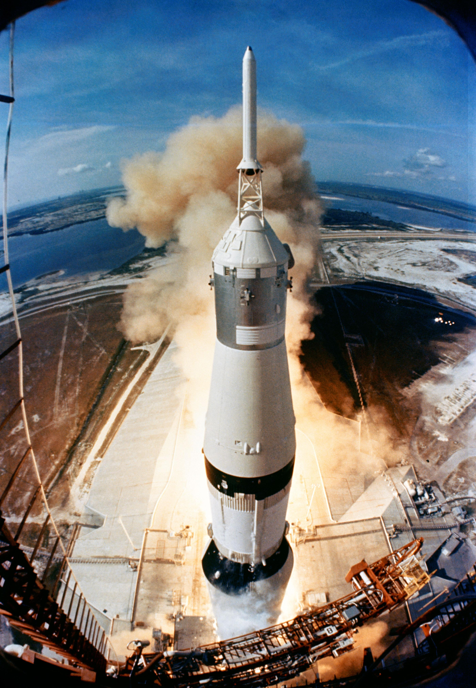
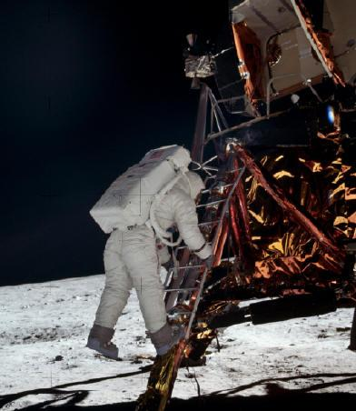
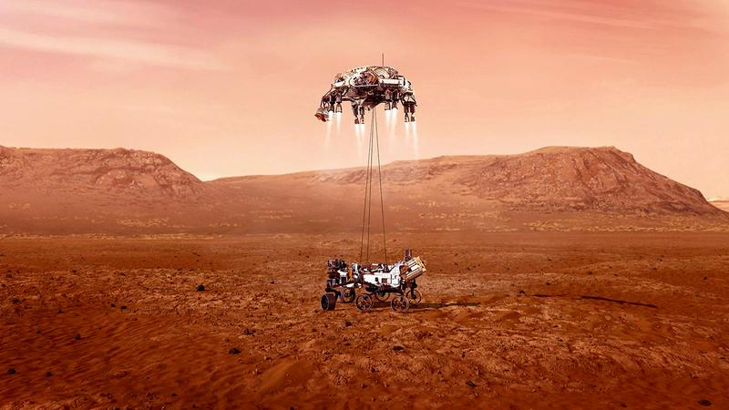
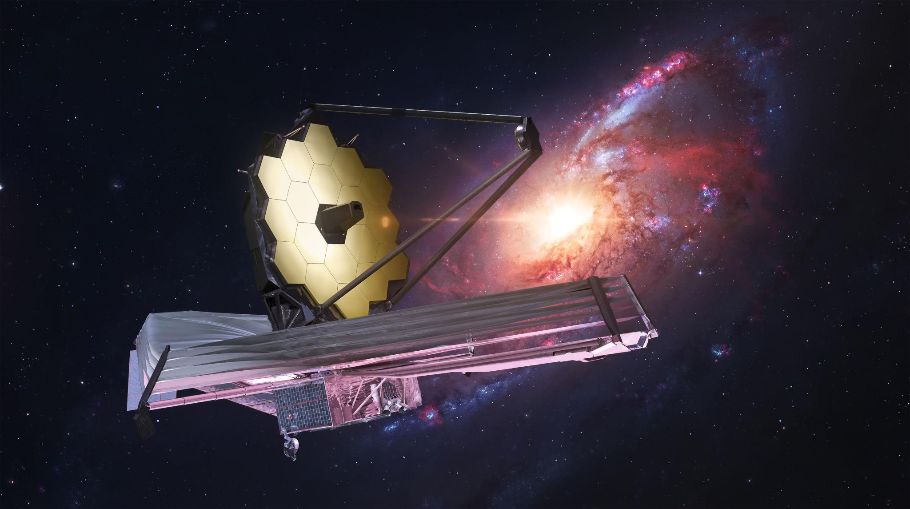
First Human Moon Landing
Apollo 11 was the first mission to land humans on the Moon. In 1969, astronaut Neil Armstrong became the first person to step onto the lunar surface. This was one of the most important achievements in human space exploration.
Space Stations
The International Space Station is a laboratory in space where astronauts live and work. It orbits Earth and allows scientists to study microgravity, human health in space, technology, and Earth from above.
Exploring Mars
Mars is one of the most explored planets in the solar system. NASA has sent rovers such as Perseverance to study its rocks, climate, surface conditions, and possible signs of ancient life.
Space Telescopes
Space telescopes allow scientists to observe distant objects without the interference of Earth’s atmosphere. The James Webb Space Telescope helps scientists study early galaxies, star formation, exoplanets, and distant parts of the universe.
05
Watch and Learn
Videos help students understand space topics visually through real footage, animations, and explanations.
Overview of all planets in our solar system.